宿泊施設紹介(エリア・スキー場別)
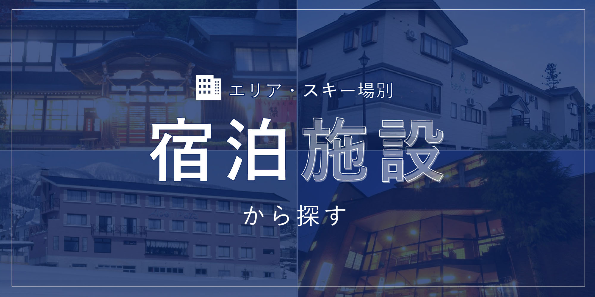
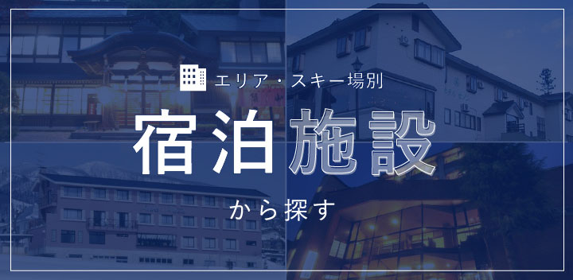
四季倶楽部旅が取扱いする各宿泊施設の紹介ページです。価格帯を抑えたリーズナブルなロッジクラス、少しだけグレードアップしたミドルロッジクラスやペンションクラス、コダワリの温泉旅館クラスやホテルクラスまで、ご予算やご希望に合わせて選びやすいよう幅広くラインナップしております。他にも、ゲレンデ近くの宿からバイキングの宿、ゆっくり温泉に浸かってアフタースキーはのんびり・・・などなど、コダワリに沿って選べる魅力的な施設が多数満載です。
マイカープランの宿泊先指定ご希望の場合は、各ページよりご予約カレンダーへおすすみください。
四季倶楽部旅が取扱いする各宿泊施設の紹介ページです。価格帯を抑えたリーズナブルなロッジクラス、少しだけグレードアップしたミドルロッジクラスやペンションクラス、コダワリの温泉旅館クラスやホテルクラスまで、ご予算やご希望に合わせて選びやすいよう幅広くラインナップしております。他にも、ゲレンデ近くの宿からバイキングの宿、ゆっくり温泉に浸かってアフタースキーはのんびり・・・などなど、コダワリに沿って選べる魅力的な施設が多数満載です。
マイカープランの宿泊先指定ご希望の場合は、各ページよりご予約カレンダーへおすすみください。
妙高エリアの取り扱い宿泊施設
-
 池の平温泉アルペンブリックスキー場
池の平温泉アルペンブリックスキー場木島屋
人柄のいいおばさんがおもてなしする気楽な宿です。新鮮な材料を使った愛情いっぱいの手作り料理が好評です。歩いて3分の公共の温泉施設も利用できます。 赤倉観光リゾートスキー場/赤倉温泉スキー場まで徒歩5分、池の平温泉アルペンブリックスキー場まで車で7～8分 に位置する宿泊先です。詳細はこちら -
 池の平温泉アルペンブリックスキー場
池の平温泉アルペンブリックスキー場スポーツプラザ四季
スポーツプラザ四季は、「おいしいお食事」と「あたたかいおもてなし」の宿です。 ほっと息をつける故郷に帰ってきたようなくつろぎをご提供します。 自分の家のようにくつろげるお部屋や、くつろぎのロビー、一日の疲れを癒やす大浴場、地のものをあたたかく手作りでおもてなす食堂がございます。 また、宿から徒歩7分のところに天然温泉「苗名の湯」もございます。 団体スキーや家族スキー旅行におすすめです。 池の平温泉アルペンブリックスキー場まで、車で8分、赤倉観光リゾートスキー場/赤倉温泉スキー場まで車で12～13分 に位置する宿泊先です。詳細はこちら -
赤倉温泉スキー場
スポーツプラザ四季
赤倉温泉スキー場：ファミリーにはうれしい！小学生までのお子さま リフト無料！！ スポーツプラザ四季は、「おいしいお食事」と「あたたかいおもてなし」の宿です。 ほっと息をつける故郷に帰ってきたようなくつろぎをご提供します。 自分の家のようにくつろげるお部屋や、くつろぎのロビー、一日の疲れを癒やす大浴場、地のものをあたたかく手作りでおもてなす食堂がございます。 また、宿から徒歩7分のところに天然温泉「苗名の湯」もございます。 団体スキーや家族スキー旅行におすすめです。 妙高杉ノ原スキー場まで、車で4分、池の平温泉スキー場まで 車8分、赤倉観光リゾートスキー場/赤倉温泉スキー場まで車で12～13分 に位置する宿泊先です。詳細はこちら -
赤倉観光リゾートスキー場
スポーツプラザ四季
スポーツプラザ四季は、「おいしいお食事」と「あたたかいおもてなし」の宿です。 ほっと息をつける故郷に帰ってきたようなくつろぎをご提供します。 自分の家のようにくつろげるお部屋や、くつろぎのロビー、一日の疲れを癒やす大浴場、地のものをあたたかく手作りでおもてなす食堂がございます。 また、宿から徒歩7分のところに天然温泉「苗名の湯」もございます。 団体スキーや家族スキー旅行におすすめです。 妙高杉ノ原スキー場まで、車で4分、池の平温泉スキー場まで 車8分、赤倉観光リゾートスキー場/赤倉温泉スキー場まで車で12～13分 に位置する宿泊先です。詳細はこちら -
 赤倉観光リゾートスキー場
赤倉観光リゾートスキー場ペンショングランメール
心を込めたおもてなしでゆっくりくつろいでいただけるアットホームな宿泊先です。 お部屋は2名1室と3名1室のタイプになります。（3名で申し込まれた場合、2名用のお部屋が2部屋になる場合があります） 池の平温泉アルペンブリックスキー場まで、車で３分、赤倉観光リゾートスキー場/赤倉温泉スキー場まで車で7～9分 に位置する宿泊先です。詳細はこちら -
赤倉温泉スキー場
ペンショングランメール
赤倉温泉スキー場：ファミリーにはうれしい！小学生までのお子さま リフト無料！！ 心を込めたおもてなしでゆっくりくつろいでいただけるアットホームな宿泊先です。 お部屋は2名1室と3名1室のタイプになります。（3名で申し込まれた場合、2名用のお部屋が2部屋になる場合があります） 池の平温泉アルペンブリックスキー場まで、車で３分、赤倉観光リゾートスキー場/赤倉温泉スキー場まで車で7～9分 に位置する宿泊先です。詳細はこちら -
妙高杉ノ原スキー場
スポーツプラザ四季
妙高杉ノ原スキー場：ファミリーにはうれしい！小学生までのお子さま リフト無料！！ スポーツプラザ四季は、「おいしいお食事」と「あたたかいおもてなし」の宿です。 ほっと息をつける故郷に帰ってきたようなくつろぎをご提供します。 自分の家のようにくつろげるお部屋や、くつろぎのロビー、一日の疲れを癒やす大浴場、地のものをあたたかく手作りでおもてなす食堂がございます。 また、宿から徒歩7分のところに天然温泉「苗名の湯」もございます。 団体スキーや家族スキー旅行におすすめです。詳細はこちら -
赤倉観光リゾートスキー場
-
赤倉温泉スキー場
木島屋
赤倉温泉スキー場：ファミリーにはうれしい！小学生までのお子さま リフト無料！！ 人柄のいいおばさんがおもてなしする気楽な宿です。新鮮な材料を使った愛情いっぱいの手作り料理が好評です。歩いて3分の公共の温泉施設も利用できます。詳細はこちら -
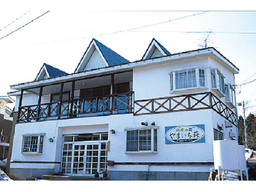
妙高杉ノ原スキー場やまいち荘
妙高杉ノ原スキー場：ファミリーにはうれしい！小学生までのお子さま リフト無料！！ やまいち荘はゲレンデサイドに位置し、 リフト乗場へも徒歩6分、帰りは玄関先まで滑ってこれる好立地。 朝イチから思う存分にスキー・スノーボードが楽しめます。 素朴な民宿ならではのおもてなしと好評の食事で、皆様のお越しをお待ちしております。詳細はこちら -
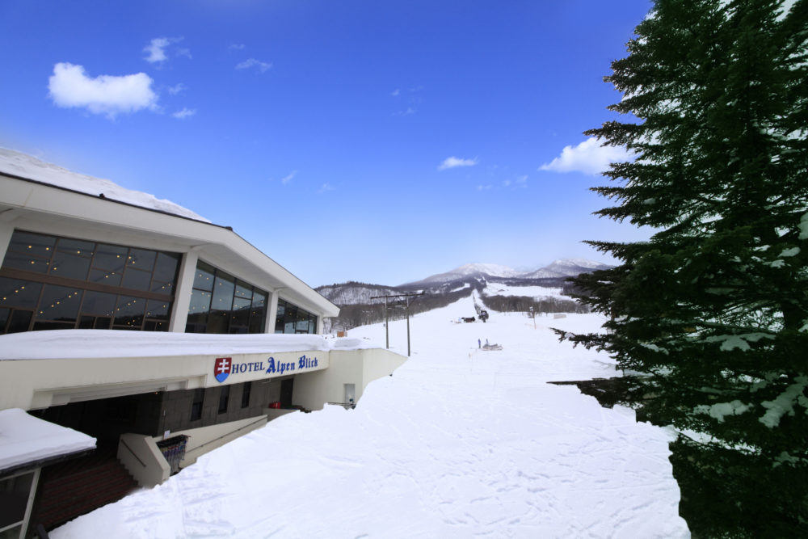
池の平温泉アルペンブリックスキー場ホテル アルペンブリック
妙高山の大きな山裾の特徴を最大限に活したワイドなゲレンデがホテルの目の前から楽しめます。 思いっきりスキー場で楽しんだ後は、南地獄谷の温泉成分をたっぷり含んだ温泉で、心身ともにリフレッシュ！ バラエティに富んだハーフビュッフェもおすすめです。詳細はこちら -
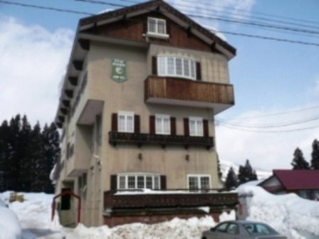
池の平温泉アルペンブリックスキー場ヴィレッジ圓山
妙高池の平温泉にある温泉とおもてなし自慢の宿です。 スキー、スノーボードの後には温泉につかり、暖かみのある和室でゆっくりとお過ごし下さい。 当館のお風呂は掛け流しの温泉です。 掛け流し単純温泉と地元の素朴な素材を生かした心のこもったお食事で滑った後の疲れを癒してください。詳細はこちら -
池の平温泉アルペンブリックスキー場
ペンショングランメール
心を込めたおもてなしでゆっくりくつろいでいただけるアットホームな宿泊先です。 お部屋は2名1室と3名1室のタイプになります。（3名で申し込まれた場合、2名用のお部屋が2部屋になる場合があります）詳細はこちら
信州エリアの取り扱い宿泊施設
-
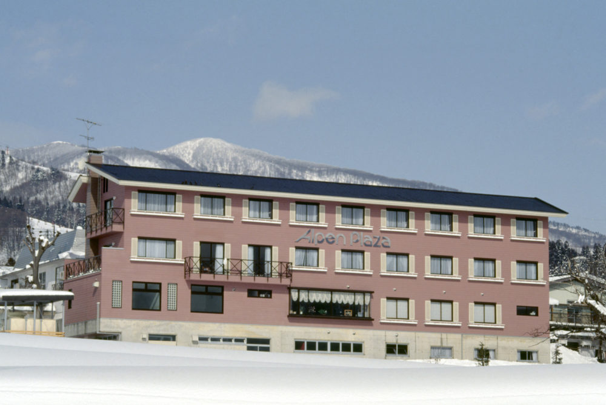
戸狩温泉スキー場アルペンプラザ
日本の原風景と星降る里の宿アルペンプラザ。奥信濃・北信州の豊富な雪解け水に恵まれた戸狩温泉や四季を通じて楽しめる温泉地です。施設は戸狩温泉スキー場のゲレンデから徒歩3分に位置します。 お風呂は天然温泉です。内湯に天然温泉を備え、疲れた身体をリフレッシュして翌日の活力となるようにと広く整えております、戸狩温泉は地下1,081mから毎分420Lもの大量の湯が自噴し、泉質は、弱アルカリ性単純温泉で、ほとんど匂いがせず大変よく温まります。 筋肉痛、関節痛、うちみ、くじき、冷え性、疲労回復などに効果があり、美肌の湯(美人の湯)としても知られ、入浴後はお肌すべすべとなり、いつまでも湯冷めしない温泉として人気です。詳細はこちら -
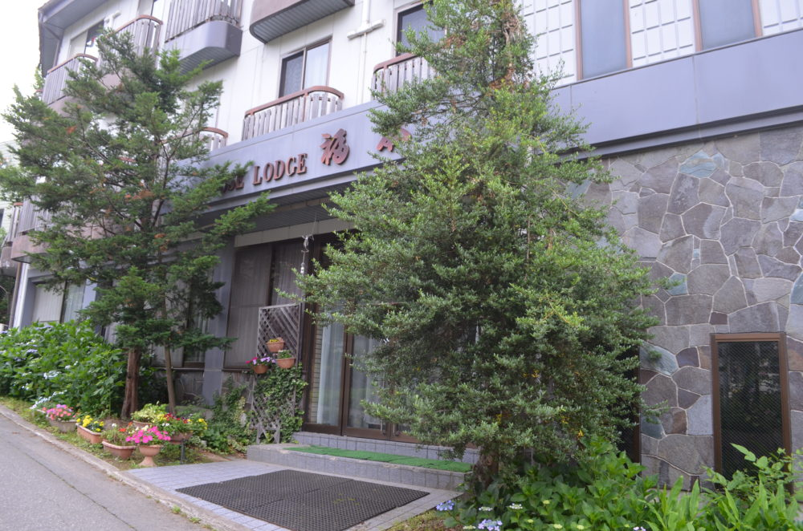
戸狩温泉スキー場アミューズロッジ福本
ロッジ福本は地産地消をうりものに自家製の雪下野菜や自慢の「こしひかり」が食べれる、素朴でアットホーム的な宿泊先です。 露天風呂もある戸狩温泉「暁（あかつき）の湯」までも徒歩5分。詳細はこちら -
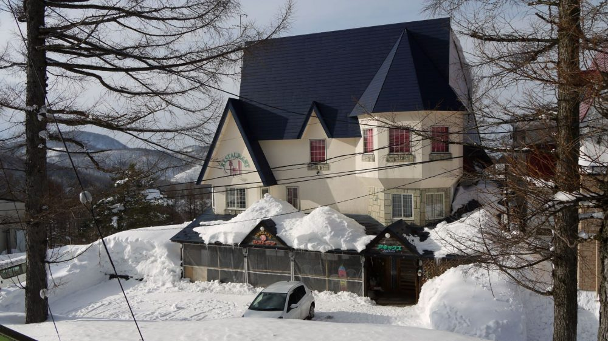
斑尾高原スキー場アネックスアブラヤ
アネックスアブラヤは斑尾高原スキー場の目の前に建つアットホームな宿です。お客様が、ゆっくりと自然を楽しめ心安らぐ宿を目指すスタッフ一同皆様のお越しを心からお待ちしています。 広い浴場で大きな湯船でゆったりと旅の疲れを癒やしていただけます。 またダイニングスペースを中心にwi-fi（無線ＬＡＮ）もあります。 このプランは１泊につき１朝食付き（夕食なし）になります。詳細はこちら -
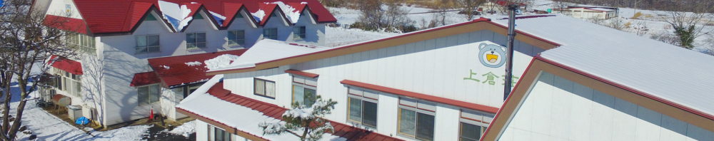
いいづなリゾートスキー場 -
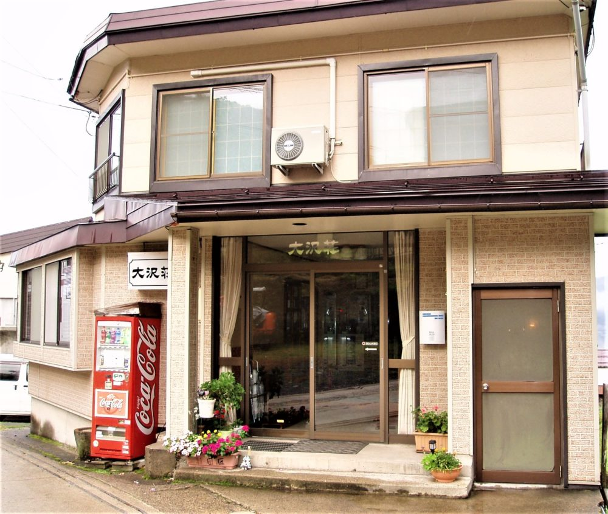
野沢温泉スキー場大沢荘
澄んだ空にきらめく樹氷、心震わす絶景を誇るビッグゲレンデは雪質・眺望ともに日本一です。温泉に癒され、雪国のぬくもりに触れ、お客様が身も心もほっとできる宿でありたいと思っています。詳細はこちら -
 タングラムスキーサーカス
タングラムスキーサーカス -
 斑尾高原スキー場
斑尾高原スキー場 -
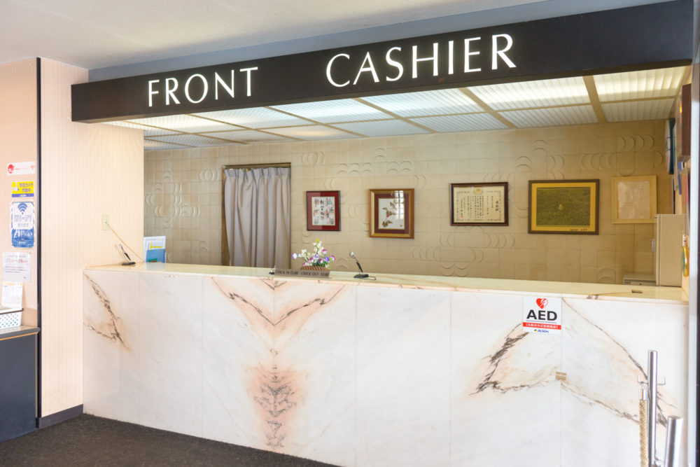
斑尾高原スキー場ホテルシルクイン斑尾
斑尾高原スキー場まで徒歩2分の好立地。 大浴場は、肩こり・腰痛に効く温泉です。滑り終わった疲れを癒してください。 館内にも お土産のみではなく軽食等もあるお土産コーナーもございます。詳細はこちら -
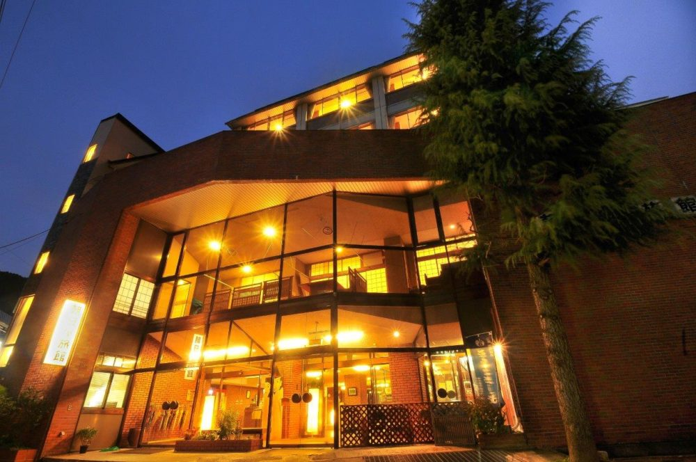
野沢温泉スキー場朝日屋旅館
野沢中央バスターミナル近くで温泉街にも行きやすい宿泊先です。お風呂も天然温泉の大浴場です。 野沢温泉街の中心部に位置し、信州の歴史ある温泉地をまわったり、国内有数の野沢温泉スキー場が徒歩圏内と、立地にも恵まれた場所にあります。また、6階建ての建物からは、北信五岳や北アルプスなどを望むことができ、「信州に来たなぁ～！」と感じることができます。源泉掛け流しの宿で、一番の自慢の展望風呂からは、北信五岳そして北アルプスまでの絶景を見ながら野沢温泉を楽しめます。詳細はこちら
苗場・上越エリアの取り扱い宿泊施設
-
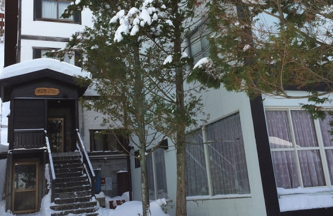
かぐらスキー場欧風民宿ティアン（4月～５月宿泊）
かぐらスキー場は、３つのエリアからなる国内屈指のビッグゲレンデ。標高も高く、11月下旬から5月下旬まで滑走でき、初滑りや春スキーの人気は抜群！GWにもスキー・スノボへ！ GW期間まで苗場のお客様評価の高い宿泊先で、マイカープランを設定しました。 苗場エリアの宿泊先になります。（かぐらスキー場まで車で約15分）詳細はこちら -
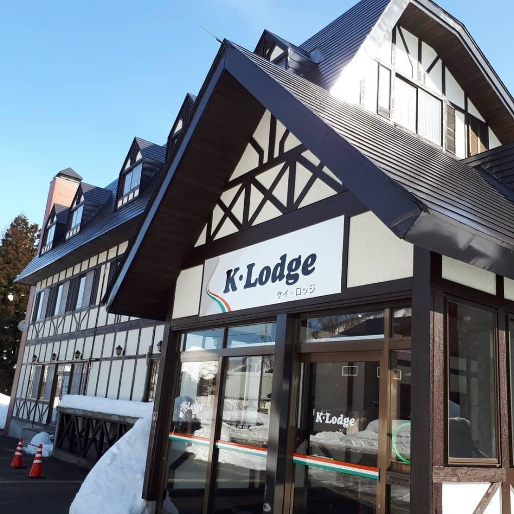
かぐらスキー場K・Lodge（４月宿泊）
かぐらスキー場みつまたステーションへのアクセスに最高のロケーションです。 日本有数の豪雪地域にあるかぐらスキー場は、標高が高いのもあり、５月まで滑走可能です。 春スキーといえば、かぐらスキー場 という人も多く、春でも、降雪時はパウダーが楽しめます。詳細はこちら -
かぐらスキー場
K・Lodge
かぐらスキー場みつまたステーションへのアクセスに最高のロケーションです。 日本有数の豪雪地域にあるかぐらスキー場は、豊富な雪と上質のパウダースノーをお楽しみいただけるスキー場です。 地元食材にこだわったお食事は、家庭料理中心のメニューで好評です。詳細はこちら -
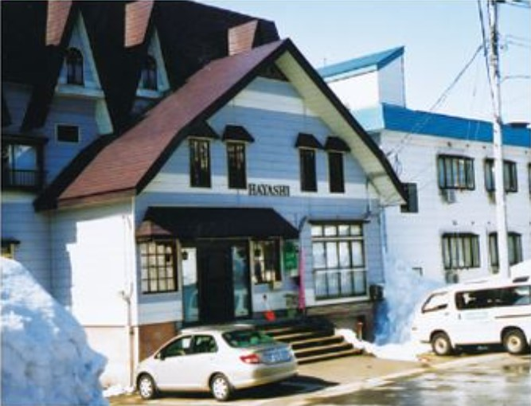
舞子スノーリゾートロッヂはやし
舞子スノーリゾート 第一リフト乗場まで１００ｍ！タップリ滑った後は、明るく清潔な館内でゆっくりとおくつろぎ下さい。 お風呂は自慢の人工温浴泉、ジャグジー風のジェット水流が疲れを癒します。 お食事は当館自家製の魚沼産コシヒカリのご飯と、ご飯によく合う手作り料理でおもてなし、地酒も各種ご用意しています。詳細はこちら -
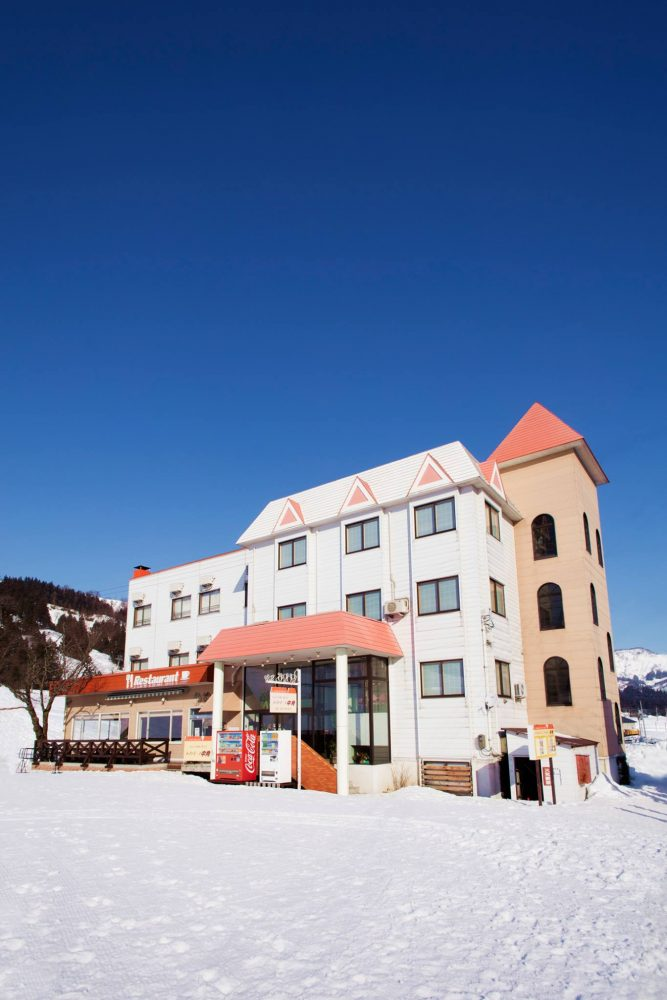
石打丸山スキー場ラ・ファミーユ中角
石打丸山スキー場ゲレンデの真ん前！世界最新のコンビリフト『サンライズエクスプレス』の真ん前！ 南魚沼産コシヒカリの美味しいご飯と自家菜園野菜、地場産食材を使用した身体にやさしい手作り料理♪ 四季彩豊かな楽しい自然とのふれあいと各種体験を楽しめるペンション＆レストラン 和室、和洋室、ツイン、ダブル、シングル、お部屋タイプも多彩♪詳細はこちら -
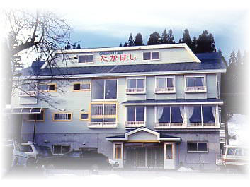
上越国際スキー場グリーンビレッジたかはし
上越国際スキー場前駅から2分のお食事もボリューム満点の宿です。 誠心誠意をモットーにしています。 和洋中の家庭料理をご用意いたします。 また、ジェットのお風呂が疲れを癒します。シャンプー、リンス、ボディシャンプー常備。 貸しバスタオルもあります(有料)。詳細はこちら -
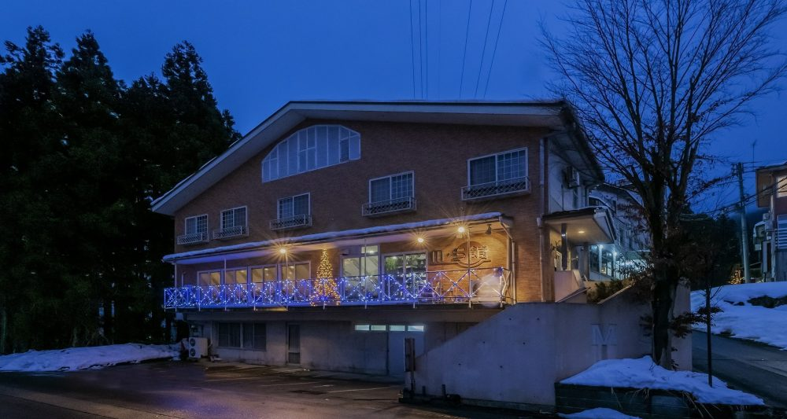
石打丸山スキー場リゾートシャンピアM・S館
上越最大！石打丸山スキー場が目の前の人気宿。 ＴＶでも紹介された充実の設備・機能満載のワンランク上の宿。 ※客室のタイプで料金が違います。 予約カレンダーの 「宿泊先指定」の項目より選択してください。 ■C室 3階にある客室（和室または２段ベット/天井が少し低い部屋になっています） ■和室A室または洋室 洗面・トイレ付（和室A室と洋室の指定はできません）詳細はこちら -
Mt.Naeba
欧風民宿ティアン
ファミリーにはうれしい！小学生までのお子さま リフト無料！！ 苗場スキー場までは徒歩2分。 樽と石造りのお風呂は２４時間入浴OK。 宿泊先からは目の前に広大なゲレンデが広がります！詳細はこちら -
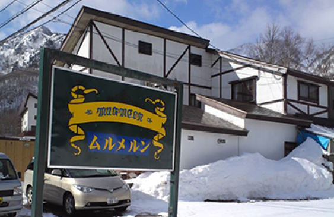
Mt.Naebaムルメルン
ファミリーにはうれしい！小学生までのお子さま リフト無料！！ 苗場スキー場から徒歩5分に位置し、山と川の景色を望むベーシックな客室を提供しています。スキー用具のレンタル、ロビーでの無料Wi-Fi、スキー用具置き場、無料駐車場を利用できます。 洋室（ベッド付）、畳敷きの和室（布団付）があります。 魚沼地方のコシヒカリを使った和食の朝食と夕食を提供しています。食事は自然の景色を望むダイニングルームで用意しています。詳細はこちら -
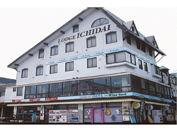
上越国際スキー場ロッジ一代
上越国際スキー場まで徒歩2分！最寄り駅まで徒歩1分の好立地です。 朝夕食ともにバイキングスタイルです。 上越国際スキー場は、４つのエリアに分かれた広大なスノーリゾートです。最大斜度３８度を誇る大別当ゲレンデ、変化に富んだパノラマゲレンデ、初心者から楽しめる長峰ゲレンデ、降雪量も豊富でパウダースノーが楽しめる当間ゲレンデなど多彩なコースが充実しております。詳細はこちら -
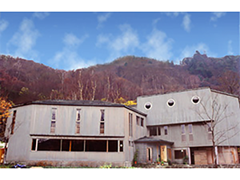
Mt.Naebaホテル 丁
ファミリーにはうれしい！小学生までのお子さま リフト無料！！ 苗場スキー場のゲレンデまで徒歩約5分。 大好評の満足のいくお食事、家庭的な暖かいおもてなしを思わず連泊したくなる宿泊先です。 モダンでシンプルな外観から1歩踏み込めばそこはくつろぎの和の空間。木の香りに包まれた館内はスポーツや観光で疲れた体にやすらぎの時をお約束いたします。詳細はこちら
白馬エリアの取り扱い宿泊施設
-
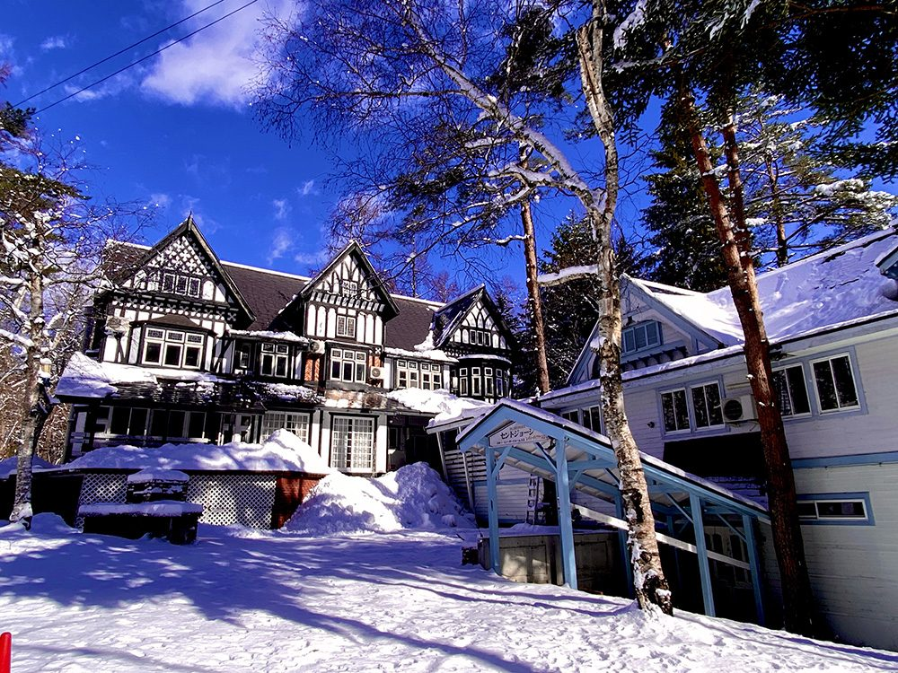
白馬五竜＆４７スキー場レディダイアナ＆セントジョーンズ
ゲレンデまでのシャトルバス停が目の前。シャトルバス利用でゲレンデまでの徒歩での移動がほとんどありません。 大浴場は準天然温泉で24時間入浴OK ※大人1名、子供1名の2名一室の予約はできません。大人2名でお申し込み下さい。詳細はこちら -
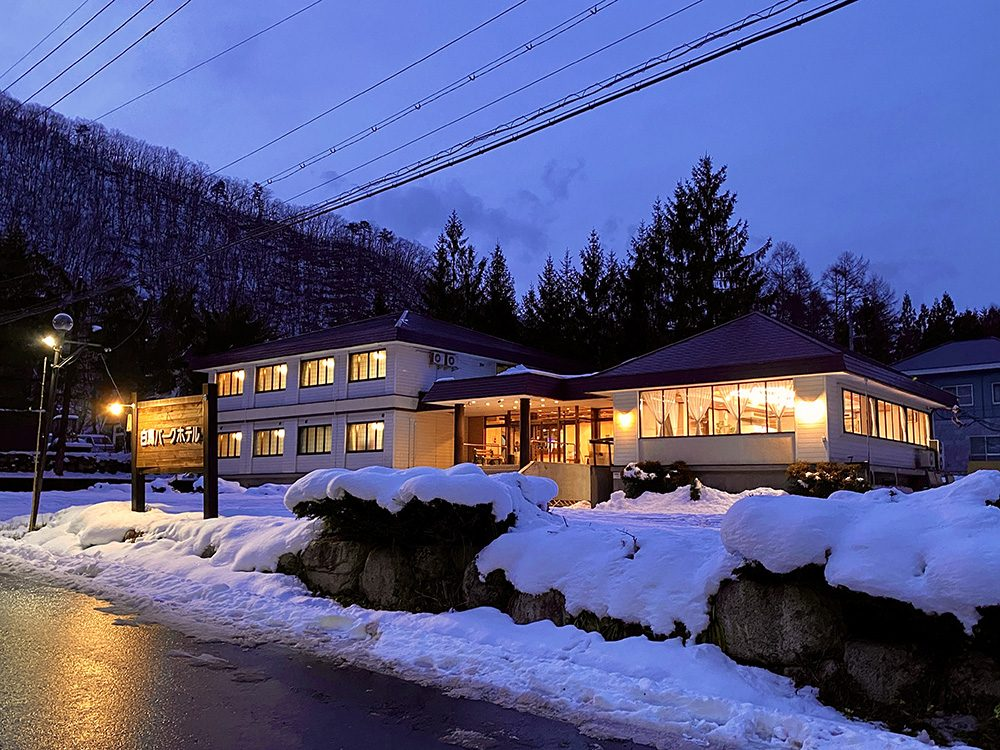
白馬五竜＆４７スキー場白馬パークホテル
エイブル白馬五竜エスカルプラザまで400メートル。スキー場の無料シャトルバスにて3分（最寄りの停留所名：白馬の森入口） アクセスが抜群の宿です。 大浴場は準天然温泉で24時間入浴OK ※大人1名、子供1名の2名一室の予約はできません。大人2名でお申し込み下さい。詳細はこちら -
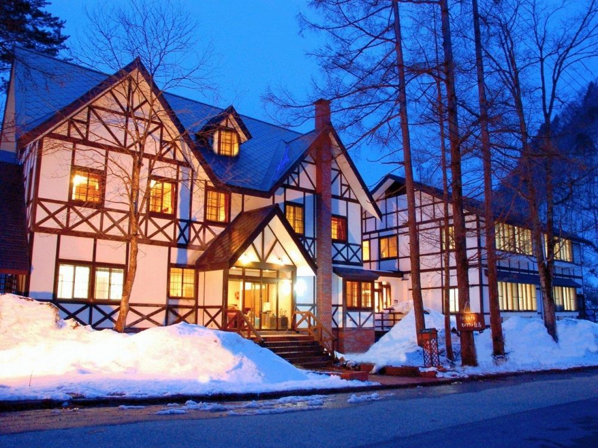
白馬五竜＆４７スキー場ホテルモンブラン白馬
ホテル前より白馬五竜スキー場への無料シャトルバスがご利用いただけます。 お帰りもホテル前までシャトルバスをご利用されると便利です。 大浴場は準天然温泉で24時間入浴OK ※大人1名、子供1名の2名一室の予約はできません。大人2名でお申し込み下さい。詳細はこちら -
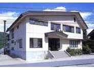
白馬五竜＆４７スキー場北原館
ゲレンデまでのシャトルバス停が目の前。シャトルバス利用でゲレンデまでの徒歩での移動がほとんどありません。 このプランは素泊まりプランになります。 お食事希望の方はオプションにて承ります。 前日までに直接宿泊先にお電話にてご予約ください。 夕食オプション：2,500円(現地払い・要事前予約※子供も同料金) 朝食オプション：1,500円(現地払い・要事前予約※子供も同料金）詳細はこちら -
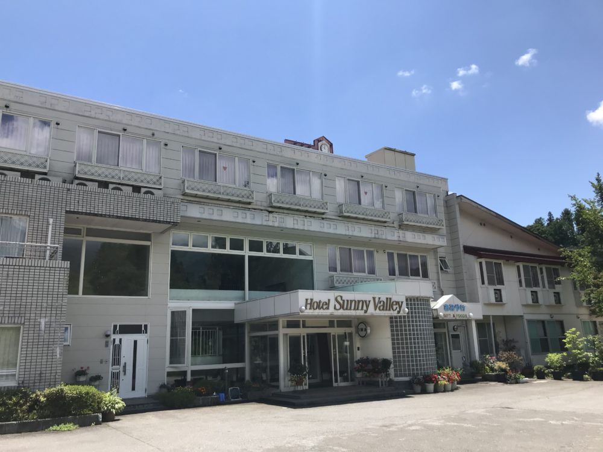
栂池高原スキー場 -
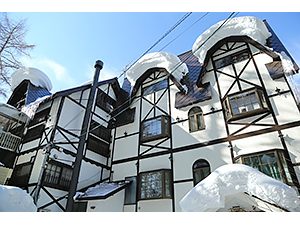
白馬五竜＆４７スキー場ランタンリルン
ランタンリルンの名はヒマラヤの名峰、ランタンリルン (7,234m)にちなんだものです。 白馬五竜白馬の森においてお客様が気取らず過ごせる宿です。お部屋は全て洋室でツインルームが主体です。パブリックスペースを含めて木のあたたかさを大切にした造りとなっています。 こちらのプランの食事条件は【朝食】のみのコースになります。 夕食を希望の方はオプションにて承ります。宿泊先に到着後、受付時にお申込み下さい。 夕食オプション：1,500円(現地払い・要事前予約) メニュー：ロコモコプレート、Rライスプレート、とんかつプレート等詳細はこちら
志賀・北志賀エリアの取り扱い宿泊施設
-
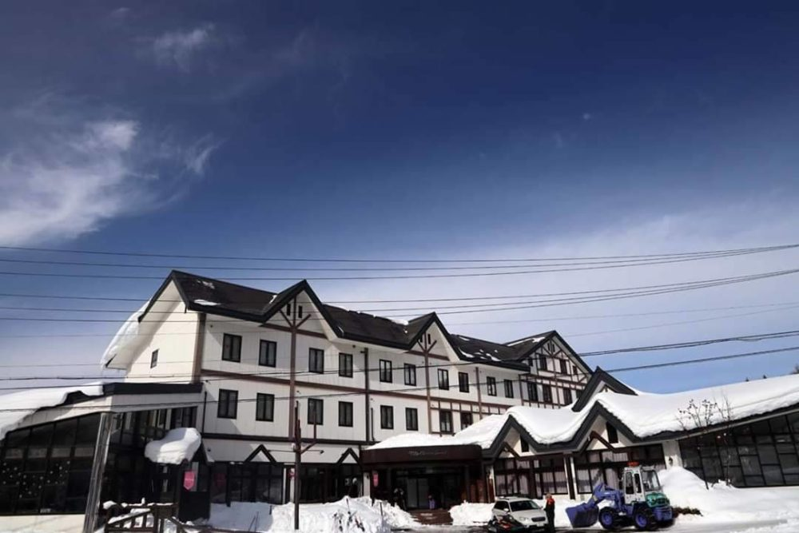
北志賀竜王スキーパーク -
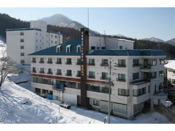
北志賀小丸山スキー場北志賀グランドホテルWEST
北志賀小丸山スキー場まで徒歩約0分！ゲレンデ直近の宿で過ごすことができます。 全室洗面付。 小丸山スキー場は､北志賀の雄大な斜面に位置し、キッズからエキスパートまで楽しんでいただけるアットホームな雰囲気のスキー場です。正面のワイドな初心者向けコースはファミリーに人気です。詳細はこちら -
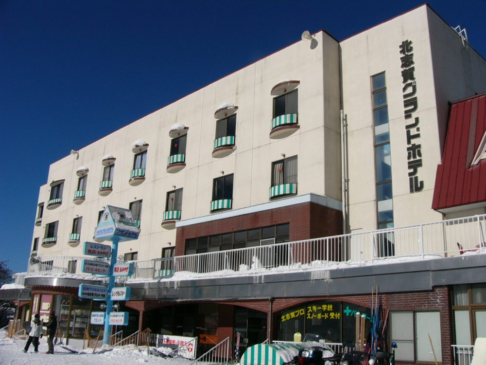
北志賀小丸山スキー場北志賀グランドホテル本館
北志賀小丸山スキー場まで徒歩約0分！ゲレンデ直近の宿で過ごすことができます。 全室トイレ洗面付。 小丸山スキー場は､北志賀の雄大な斜面に位置し、キッズからエキスパートまで楽しんでいただけるアットホームな雰囲気のスキー場です。正面のワイドな初心者向けコースはファミリーに人気です。詳細はこちら -
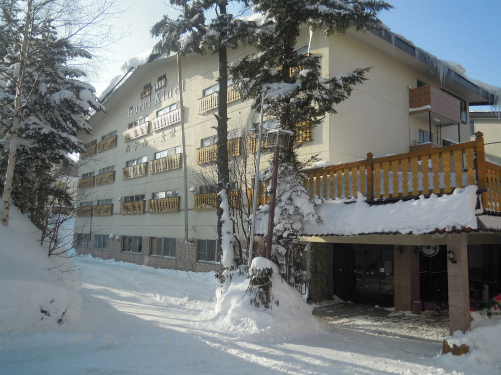
志賀高原スキー場ホテル金栄
志賀一ノ瀬ゲレンデまでは徒歩4分。宿を出ると一面銀世界が広がります。 お食事は自家米と野沢菜食べ放題です。志賀高原の雪解け水で栽培した自家米を玄米で保存し、使う分だけを精米しております。精米したて、炊き立てのご飯をご用意しております。 冷え切った身体を芯から温める、大浴場もぜひご利用ください。詳細はこちら
尾瀬エリアの取り扱い宿泊施設
-
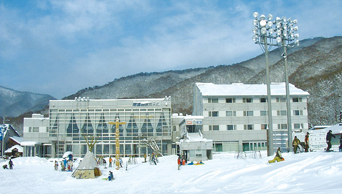
スノーパーク尾瀬戸倉 -
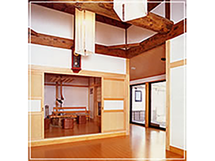
ホワイトワールド尾瀬岩鞍旅館こばやし
旅館こばやしは、しっとりと落ち着いた心なごむ和の佇まいです。一歩館内に入ると、至る所でその雰囲気が伝わってきます。木と白壁に包まれた落ち着いた館内です。 館内へ入ると、正面に囲炉裏のお部屋があります。談話、お待ち合わせ、くつろぎの一時にご利用下さい。 客室は、足をのばしてのんびりくつろげる和室です。窓側には居間部分があり、大人数でもゆったり楽しめます。 ホワイトワールド尾瀬岩鞍スキーリゾートのゲレンデを望むことが出来る、お風呂も天然温泉です。詳細はこちら
東北エリアの取り扱い宿泊施設
-
 猪苗代スキー場
猪苗代スキー場 -
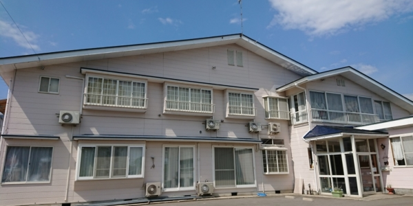
猪苗代スキー場 -
アルツ磐梯スキー場
-
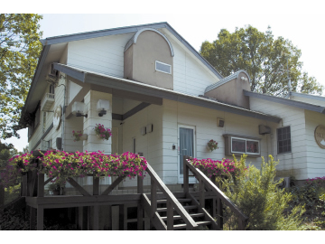
猪苗代スキー場ペンションナイスデイ
アットホームな雰囲気でお友達のお家に遊びに来たような感覚でお寛ぎいただけます。 冬は和食膳のお料理を御提供します。 ロフト付洋室4室、4名グループも１室でお泊り頂けます。詳細はこちら -
アルツ磐梯スキー場
ペンションナイスデイ
アットホームな雰囲気でお友達のお家に遊びに来たような感覚でお寛ぎいただけます。 冬は和食膳のお料理を御提供します。 ロフト付洋室4室、4名グループも１室でお泊り頂けます。詳細はこちら -
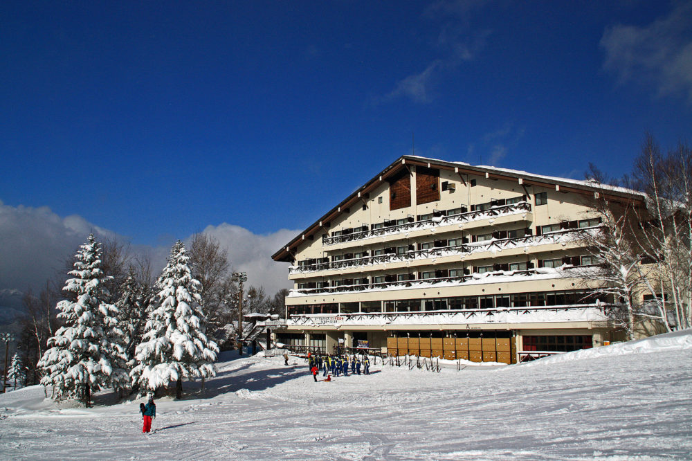
会津高原たかつえスキー場
その他エリアの取り扱い宿泊施設
-
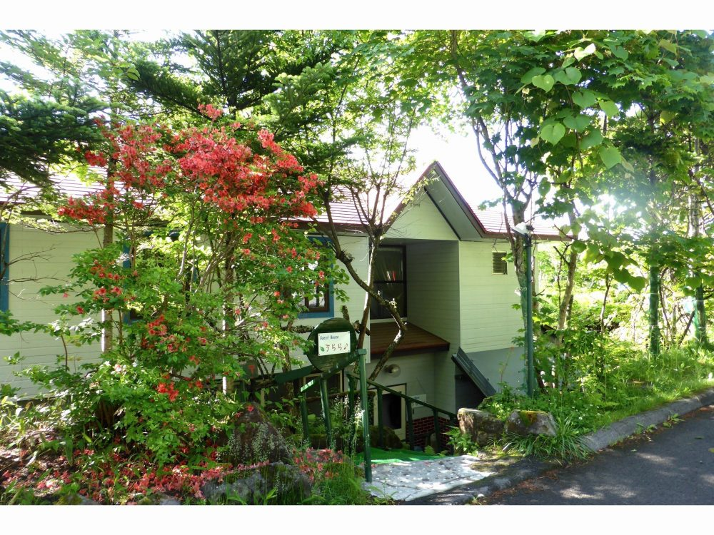
-
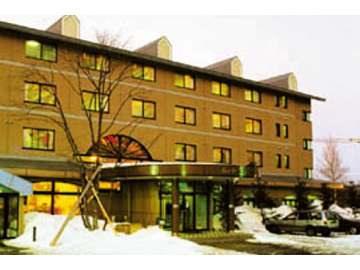
菅平高原スノーリゾート菅平イナリールホテル
当ホテルはパインビークエリア・オオマツゲレンデが目の前です。リフト乗り場までもわずか徒歩1分と、移動に大変便利です。 ゆったりとしたお部屋、そしてひろびろとしたパブリックスペース。安全で快適なひとときをお過ごしいただけます。 ※リフト券は菅平高原スキー場全山共通券になります。（太郎エリア・ダボスエリアには各自で移動していただきます。送迎はありません。）詳細はこちら